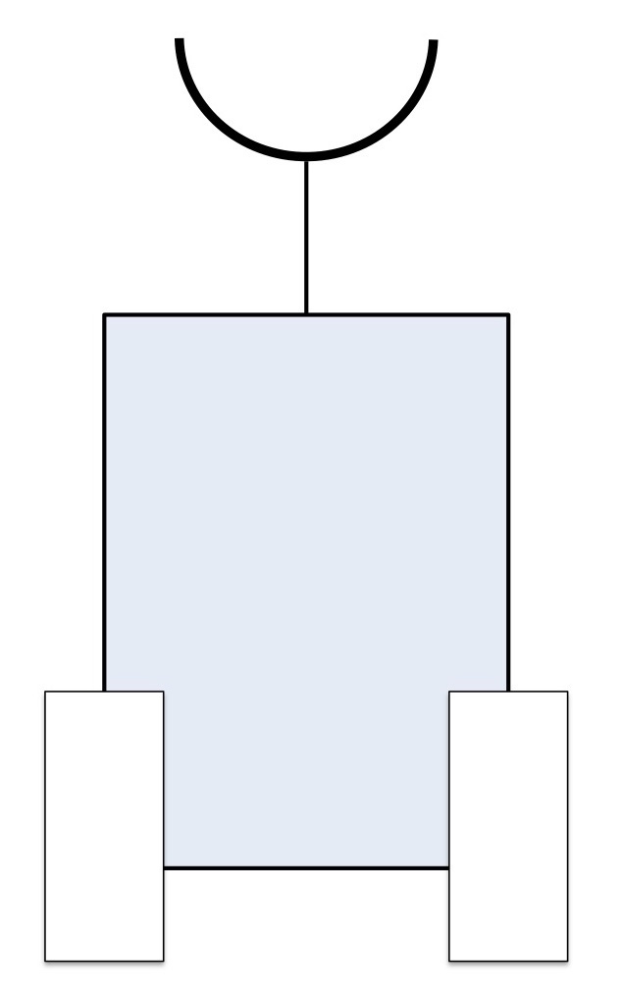
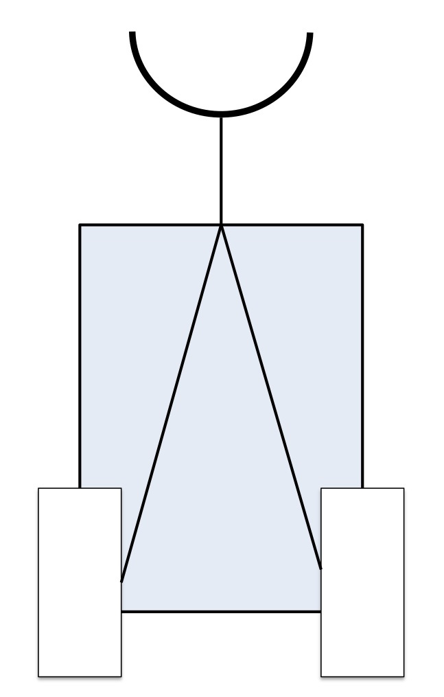
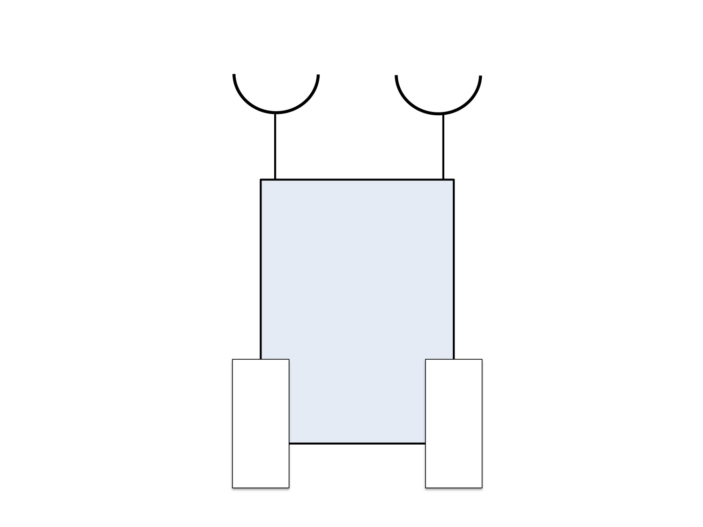
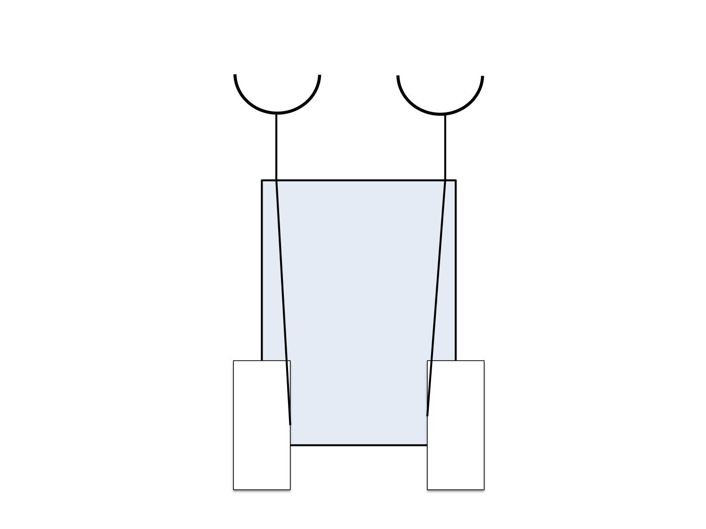
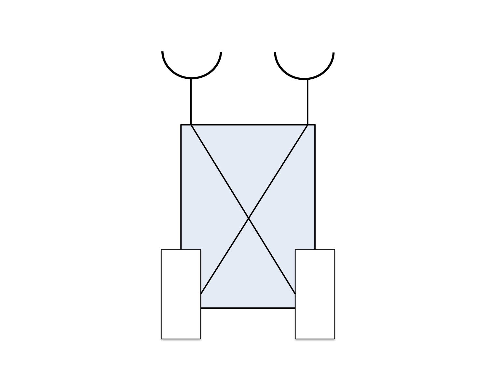
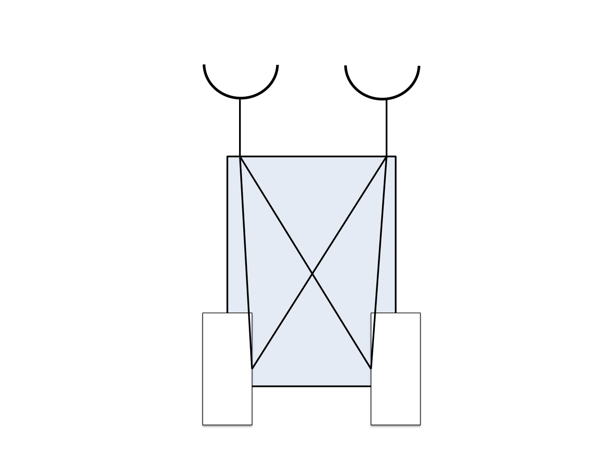

|  |  |
|  |  |
|  |  |
susie@robogals.org
emea.robogals.org/about/join-us/
1. Txchnologist staff. [Internet]. Txchnologist. 2016 [cited 2 October 2016]. Available from: http://txchnologist.com/post/64298009458/mechanical-sidekicks-show-softer-side-of
2. heinzautomato57. [Internet]. 2007 [cited 2 October 2016]. Available from: https://www.youtube.com/watch?v=JcniyQYFU6M
3. Wegener A. Valentin Braitenberg Portrait [Internet]. 2014 [cited 2 October 2016]. Available from: https://commons.wikimedia.org/wiki/File:Valentin_Braitenberg_Portrait.jpg
4. Venkatraman D. FooPlot | Online graphing calculator and function plotter [Internet]. Fooplot.com. 2016 [cited 6 October 2016]. Available from: http://fooplot.com/
5. Melikamp. A plot of a polynomial function of degree 7: {\displaystyle y=x^{7}-14x^{5}+49x^{3}-36x} y=x^{{7}}-14x^{{5}}+49x^{{3}}-36x. In the graph x ranges from -3.2 to 3.2 and y ranges from -100 to 100. [Internet]. 2016 [cited 6 October 2016]. Available from: https://commons.wikimedia.org/wiki/File:Septic_graph.svg